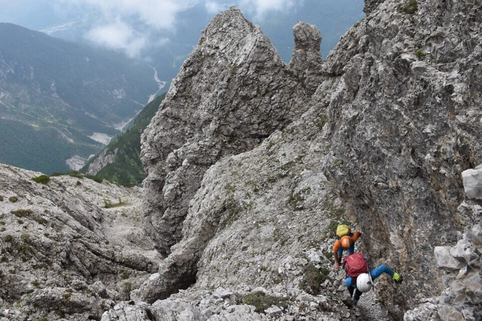
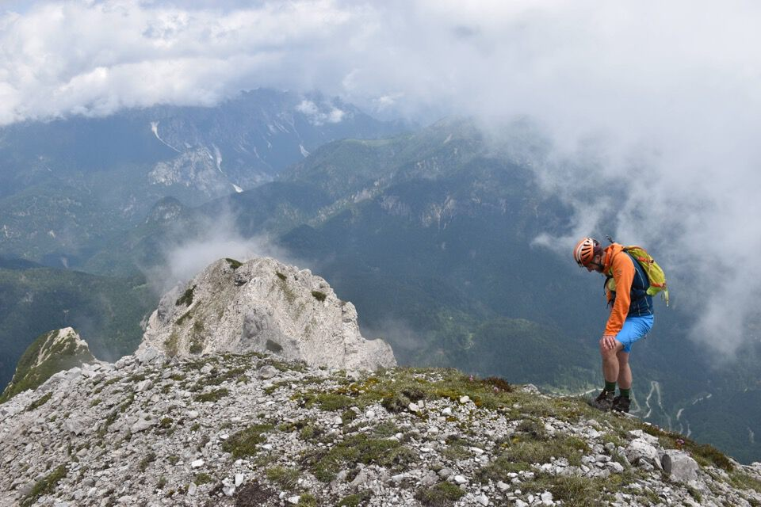

Massimo ed Elisabetta m'invitano a questa escursione in zone per me inusuali: bello, m'è piaciuto. La cresta fra le due Punte non è tecnicamente difficile ma è impegnativa per via del terreno delicato.
Sorpassiamo la via normale al M. Miaron seguendo il sentiero Olivato per un pezzo.
Dalla forcella della Balota prendiamo l'evidente cengione/rampa che segna l'inizio della via normale alla Punta nord. Poi è solo un salire obliquando a sx.
Vicinissimi alla cima del M. Miaron, separato da noi da un misterioso e profondo intaglio (il Berti però dice II\).
In cima alla Punta nord, con la sud davanti.
Le Punte Savorgnana e Cozzi, molto estetiche.
C'apprestiamo a percorrere l'arcigna cresta.
Il gendarme nel mezzo si può aggirare a sx, c'era un ometto, ma la cengetta esposta e discendente non ci è piaciuta (però l'abbiamo percorsa in salita, senza patemi, quando siamo tornati indietro). Neppure la cengia che aggira a dx il gendarme si presentava bene, così da questa siamo saliti per un canalino e scesi alla forcelletta. Che bello trovare la propria strada!
Si sale fra rocce e fiori.
Verso Cima Pitacco; a dx la Val Cridola.
La Punta nord con a dx i tornanti della Mauria.
Alcuni ometti indirizzano a scendere lungo la cresta sud: faccenda da approfondire.
La Punta Cozzi.
Il terreno è assai delicato, ma le difficoltà sono basse.
Ultimo saluto alla Punta sud.
La visibilità migliora al pomeriggio: qui la Cima Bragagnina e la Cima dei Landre, fra Tudaio e Crìssin.
Tutta la catena del gruppo dei Brentoni che mi piace assai.
***